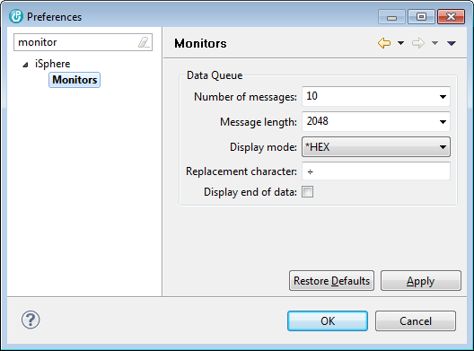

The available options are:
| Number of message | - | Specifies the maximum number of messages that are retrieved from a data queue. |
| Message length | - | Specifies the maximum number of message bytes per message that are retrieved from the host. |
| Display mode | - | Specifies how the message data is displayed. |
| Replacement character | - | Specifies a character that is used to replace non-displayable characters. |
| Display end of data | - | Specifies whether or not the message data is indicated by a special character. |